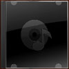

Thistle
Threnody For the Universe
Montesorri Arc
The Tired and Nervous Mind
Inchworm's Day Out
Symphony In a Two Dollar Room
Piano Trio No. 1
Music for Piano and Orchestra
Guitar Concerto No. 1
Farewell
Titan
The Possible Ear
That Road Home
The Lesson
The Visitor
Goodwater
The Walker
April Showers Bring May Flowers
Guitar
Classical
Electronic
Film Soundtracks